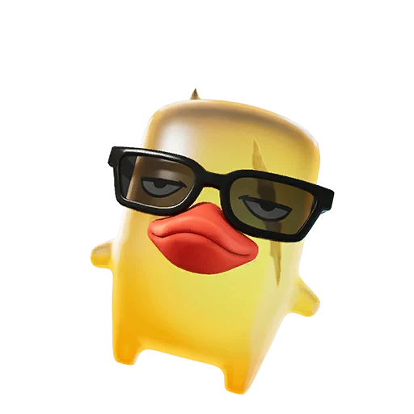
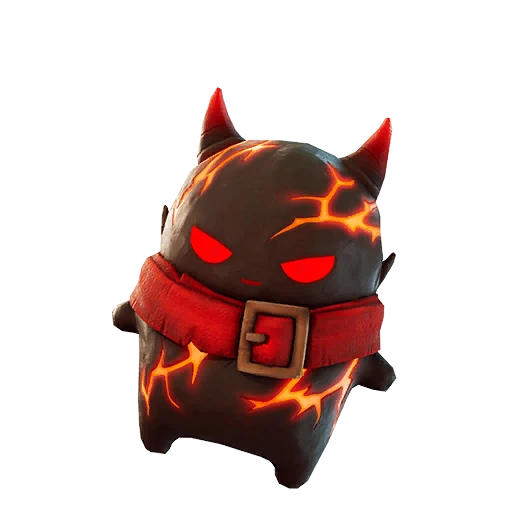
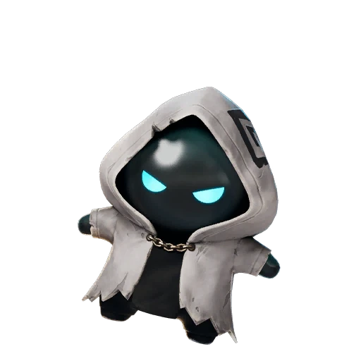

Rarity Tier
Epic Sprites in Fortnite: The Complete Rarity Guide
There are 6 Epic Sprites in Fortnite. See each one's ability below, then mark the ones you own on the FORTNITE SPRITES TRACKER.

Duck Sprite Epic Ghost Sprite Epic
Ghost Sprite Epic 
Demon Sprite Epic King Sprite Epic
King Sprite Epic 
Aura Sprite Epic Striker Sprite Epic
Striker Sprite Epic Collecting every Epic Sprite? Track your progress as you go.
Open the FORTNITE SPRITES TRACKER →What Are Epic Sprites in Fortnite?
Epic Sprites are the second tier of collectible Sprite companions in Fortnite, sitting one step above the common Rare Sprites and just below Legendary and Mythic. Each of these Epic Sprites is a pocket-sized helper that follows you around the island and triggers a unique combat or utility ability while you play. Because they belong to the Epic rarity band, these Sprites feel noticeably more impactful than the Rare ones, yet they still appear often enough that a focused player can realistically collect the whole set.
What makes the Epic Sprites stand out is the sheer variety of their effects. Some lean into raw aggression, some into survivability, and some reward a very specific playstyle or movement pattern. There are six Epic Sprites in the current lineup, and learning what each one does is the first real step toward building a roster of Epic Sprites that matches how you like to play.
The Full List of Epic Sprites
Here is every sprite in the Epic rarity, along with its signature ability and where you can find it. The Duck Sprite replenishes your shields whenever you emote or jam, and it spawns inside Sprite Chests across the map. The Ghost Sprite cloaks you for a short time after reloading, and it appears during night-time spawns. The Demon Sprite siphons health and shields on eliminations, and like the Duck it is found in Sprite Chests across the map.
The list of Epic Sprites continues with the King Sprite, which boosts your pickaxe damage and also drops from Sprite Chests across the map. The Aura Sprite grants a Shock Rock charge after you deal enough damage, and it turns up in chests and Supply Drops. Finally, the Striker Sprite triggers Overdrive after you mantle or hurdle, and it has the most unusual unlock of the group: you earn it by scoring a goal at the Soccer Pitch. Together these six make up the complete set of Epic Sprites you can chase.
How to Get Epic Sprites
Most Epic Sprites come from Sprite Chests scattered across the map, so the fastest way to grow your collection is simply to open as many of these chests as you can each match. The Duck, Demon, and King Sprites all share this Sprite Chest source, which means a single hot-drop into a chest-dense area can put several Epic Sprites within reach in one game.
A few of the Epic Sprites break the pattern, and those are worth planning around. The Ghost Sprite only appears at night, so it pays to load into matches during night-time spawns if it is the one you still need. The Aura Sprite shows up in both chests and Supply Drops, giving you two reliable paths to it. The Striker Sprite is the odd one out and requires you to score a goal at the Soccer Pitch, so detour there whenever it is on your wishlist.
How Rare and Strong Are Epic Sprites?
In terms of drop odds, the Epic Sprites sit in a comfortable middle band. The standard versions of Duck, Ghost, Demon, and King each land at a 9% drop rate, while Aura and Striker sit slightly lower at 6.98%. That is far rarer than the Rare tier but dramatically more common than the Legendary, Mythic, and special variant Sprites, which is exactly why the Epic Sprites are such a satisfying mid-game goal to pursue.
Strength-wise, these Epic Sprites punch well above their rarity. Shield refills from the Duck Sprite, the lifesteal on the Demon Sprite, and the reload cloak on the Ghost Sprite are all genuine survival tools, while the King Sprite and Striker Sprite reward aggressive, movement-heavy play. The wide range of effects means there is almost always an Epic Sprite that fits the situation you find yourself in.
Tips for Collecting All Epic Sprites
The smartest way to complete the Epic Sprites set is to track which ones you already own so you stop wasting runs on duplicates. Our FORTNITE SPRITES TRACKER makes that easy: tick off each sprite as you find it and the tool shows you exactly which Epic Sprites are still missing. We invite you to track your Epic Sprites collection on the checklist so every match moves you closer to a full set.
Beyond tracking, match your route to your remaining targets. If you need the chest-based Epic Sprites, prioritize POIs packed with Sprite Chests; if the Ghost Sprite is left, queue into night matches; and if the Striker Sprite is the gap, head straight for the Soccer Pitch goal. Hunting the rarer Gold, Gummy, and Galaxy versions of these Epic Sprites takes real patience, so log every find in the FORTNITE SPRITES TRACKER and let the data guide your next drop. With a clear plan, finishing all six Epic Sprites is well within reach for any dedicated collector.
Frequently asked questions
How many Epic Sprites are there in Fortnite?
There are six in this rarity tier: Duck, Ghost, Demon, King, Aura, and Striker. Each one has its own ability and source, so completing the full set means tracking down all six.
Which Epic Sprite is the hardest to unlock?
The Striker Sprite is usually the trickiest because you must score a goal at the Soccer Pitch to earn it, rather than just opening Sprite Chests like the Duck, Demon, and King Sprites.
What is the drop rate for this rarity?
Duck, Ghost, Demon, and King land at a 9% drop rate, with Aura and Striker at 6.98%, making them common enough to collect with steady, focused play.